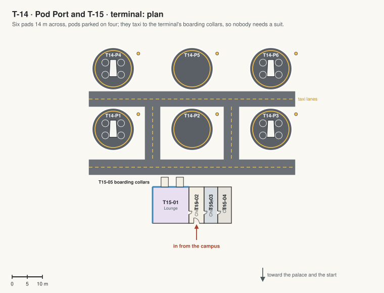

T-14 · Pod Port and T-15 · terminal
A parking field for flying pods with its terminal, at the far end of the campus on the plain, where nothing on the ground can be seen from the start: built now so the campus is ready for travel by air.
- The pads: dark, with white markings, a ring of lights round each and a charging mast beside it; taxi lanes to the terminal. The pads are outside, on the ground: only the pods go there. People board through the terminal's collars, so nobody needs a suit.
- The pods (Jim: "on mars air is so little and can hardly support flying pod. borrow the same idea from Jim's retirement home use anti gravity technology"): no rotors and no thrust. A two-seat cabin 5.6 m long, a teardrop of pearl-white composite under a one-piece tinted canopy, sits inside a halo: a flat elliptical ring round its waist on two swept pylons, the anti-gravity drive, whose field pushes against the ground like the Crown's drives at Arcadia and steers by leaning. It glows faintly underneath and stirs the dust when the pod is low. The pilot sits on the right, with chin windows at the feet for looking straight down.
- Fly one: board it at the pod dock off the Ring's right side (T04-03) or here; fly it over the campus and the crater, up to 400 m and at up to 40 m/s, for the eagle's view. Set down anywhere open: a pod floats level 0.45 m over the ground, whatever the slope, and never touches a roof. At the pod dock it settles onto its docking spot and the collar runs out to its door.
- Ready for later: the pads, chargers and collars are sized for bigger pods, and two more pads fit on the plain beyond.

| Code | Room | What it is for | Size |
|---|---|---|---|
| T14-P1 | Pad 1 | A landing pad 14 m across with a lit ring and a charging mast. A pod parked. | 150 m² |
| T14-P2 | Pad 2 | A landing pad 14 m across with a lit ring and a charging mast. | 150 m² |
| T14-P3 | Pad 3 | A landing pad 14 m across with a lit ring and a charging mast. A pod parked. | 150 m² |
| T14-P4 | Pad 4 | A landing pad 14 m across with a lit ring and a charging mast. A pod parked. | 150 m² |
| T14-P5 | Pad 5 | A landing pad 14 m across with a lit ring and a charging mast. | 150 m² |
| T14-P6 | Pad 6 | A landing pad 14 m across with a lit ring and a charging mast. A pod parked. | 150 m² |
| T15-01 | Lounge | A waiting room with the view of the pads through the glass. | 140 m² |
| T15-02 | Check-in | A desk and the departures board. | 60 m² |
| T15-03 | Charging room | The pods' batteries and chargers. | 54 m² |
| T15-04 | Crew office | The pod crew's desk and the flight screens. | 54 m² |
| T15-05 | Boarding gates | Two collars on the pad side that seal onto a pod's door: you board without a suit. | 15 m² |